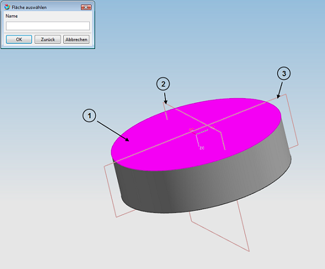

|
|
|


已有轴数据时生成轮齿
要求：
- 在生成开始前，圆柱直径必须已经是齿轮轮齿的正确外径。
- 对于内齿轮，在切削轮齿之前必须先建立空心圆柱体模型。
例如，在 KISSsoft 菜单中选择圆柱齿轮副计算。生成齿轮的过程（参见"3D 齿轮的生成"章）与创建新齿轮的过程相同。
如果在 Siemens NX 中已经打开了一个零件，则会显示一个带有 3 个选择按钮的窗口：
- 在新零件中
- 可用零件，绝对定位
- 可用零件，相对定位
各个选择选项及其用途的说明：
- 选择 在新零件中 以生成整个齿轮。
- 选择 以仅选择要在其上切削轮齿的一个侧面。生成过程现在会生成轮齿将定位的固定基准面。
- 选择 以依次选择一个侧面和两个基准面（切入该侧面）。因此轮齿可以定位在相对基准面（DATUM PLANE）上，而不依赖于绝对零点。这种定位主要是 Teamcenter "主模型概念" 中定义的系统化工作方法所必需的。

在已有圆柱上生成轮齿是在直齿或斜齿的内外圆柱齿轮上进行的。
Gear teeth if existing shaft data is present
Requirements:
- The cylinder diameter must already be the correct external diameter for the gear teeth before generation starts.
- For internal toothing, a hollow cylinder must already be modeled before the gear teeth can be cut out.
For example, select the cylindrical gear pair calculation in the KISSsoft menu. The procedure for generating the gear (see chapter Generation of 3D gears) is identical to the procedure for creating a new one.
If a part is already opened in Siemens NX, a window with 3 selection buttons is displayed:
- In a new part
- Available part, absolute positioning
- Available part, relative positioning
Explanations of the individual selection options and their use:
- Select In a new part to generate the entire gear.
- Select to select only one side surface on which the gear teeth are to be cut. The generation process now generates fixed levels on which the gear teeth will be positioned.
- Select to select one side surface and two levels (which cut into the side surface), one after the other. The toothing can therefore be positioned at relative levels (DATUM PLANE) and is not dependent on the absolute zero point. This positioning is primarily required for the methodical working method defined in the Teamcenter "Master Model concept".
The generation of toothing on existing cylinders is performed on both inside and outside cylindrical gears with straight or helical toothing.